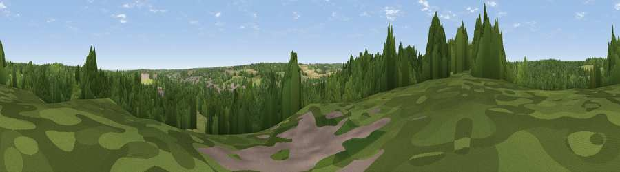

Viewpoint near Upper Harbledown
#43942 in England · top 92% of its area beats it · near Upper HarbledownThe view, rendered

A 360° render of this exact spot computed from the terrain model, tree cover and land cover — summer colours, afternoon light, calibrated against photographs of famous viewpoints. Real trees, hedges and buildings will differ in detail.
The panorama
Grey silhouette: terrain skyline in each direction (720 bearings, Earth curvature and refraction included). Dashed green: skyline with trees (+15 m) and buildings (+8 m) as obstacles. Blue strip: how far the ground is visible on each bearing.
Where the view opens
Wedge length = distance to the farthest visible ground on that bearing (vegetation-aware). Rings at 10, 25 and 50 km.
What fills the view
59% woodland · 31% grassland · 5% built-up · 4% cropland · 1% water
Angular shares of the visible panorama (visual magnitude), not map area. Landscape diversity 0.44 (0–1 Shannon).
Key numbers
More beautiful places nearby
The staircase of upgrades: each row has a higher view potential than everything closer. Driving times are estimates from straight-line distance, calibrated against real road routing — check an actual route before setting out.
| Place | Direction | Drive | Score |
|---|---|---|---|
| Viewpoint near Harbledown | E · 1 km | ~4 min | 26.6 |
| Viewpoint near Chartham | S · 2 km | ~6 min | 32.6 |
| Viewpoint near Chartham | S · 4 km | ~8 min | 35.2 |
| Victory Woods Link Sculpture | NNW · 5 km | ~11 min | 50.7 |
| Viewpoint near Broad Oak | ENE · 5 km | ~11 min | 53.5 |
| Viewpoint near Dunkirk | WNW · 5 km | ~11 min | 55.8 |
| Viewpoint near Yorkletts | NNW · 7 km | ~14 min | 60.9 |
| The Mount (Popsy's View) | WSW · 8 km | ~16 min | 61.7 |
51.27748, 1.03574 · source: screening · position refined by local search. Computed location — check access rights before visiting.